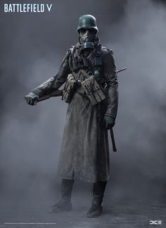

El componente de infantería de marina de la FNB se origina con la creación del Batallón de Infantería de Marina Almirante Grau en la década de los 1980. Esta unidad de 600 hombres se asienta en la base naval de Tiquina, en el lago Titicaca. Posteriormente cambia de nombre a Batallón de Infantería de Marina Independencia, con asiento en Chua (No confundir con el RI17 Independencia del EB).
En la madrugada del 22 de junio de 1941 el embajador soviético en Alemania recibió una llamada telefónica en la que se le pedía acudir urgentemente al despacho de Joachim Ribbentrop
